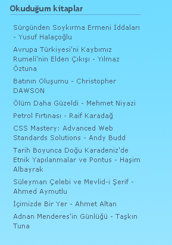
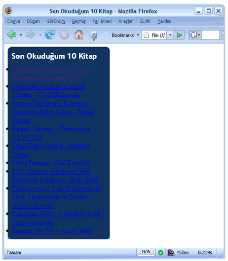
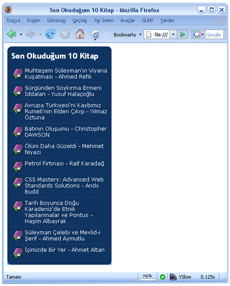
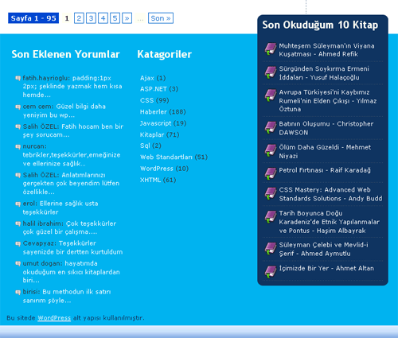

Son zamanlarda sitemin(fatihhayrioglu'nun not defteri) bazı bölümlerini
yeniden gözden geçiriyorum. WordPress2.3.3 sürümünden sonra "Son
Okuduğum 10 Kitap" bölümü çalışmamaya başladığı için kaldırmıştım belli
bir süre sonra yeniden ekledim. Burada Yakuter'in kategori yazıları
eklentisini kullanıyordum. Eklenti WordPress'in yeni sürüm ile birlikte
çalışmamaya başladı. Bu kısımda bir kaç değişiklik yaptıktan sonra
çalışmaya başladı. Hazır elimiz değmişken bide görünümünü değiştirelim
dedim.
Şu ana alt kısımda gördüğünüz hali bitmiş hali. Bu kısmı nasıl yaptığımı
açıklayarak kullanılan tekniğin nasıl uygulandığını sizlerle paylaşmak
istedim. Olur ki sizede lazım olur.
Stil uygulanmamış listeyi(ham HTML) görmek için tıklayınız.

"Son Okuduğum 10 Kitap" kısmının eski görünümü
Bu kısım liste elemanları ile oluşturulmaktadır.
<div class="smallbox"> <h3>Okuduğum
kitaplar
Yapacağımız düzenlemeyi düşünerek ilk olarak ardalanı oturtalım, ardalan
resmi için aşağıdaki resimleri hazırladım:
Kullanılacak ardalanlar
Alt kısımdaki diğer alanlardan ayırmak için bazı id tanımlamaları
yaptım:
[sourcecode language="html" highlight="1,3"]
CSS kodunu yazmaya başlarsak:
İlk olarak oval kenarın üst kısmını okudugumKitaplarKapsul olarak
tanımladığımız katmana verelim. Ardalan tanımı yanı sıra genişlik, kenar
dış boşluğu(margin), ve kenar iç boşluğu(padding) tanımları yapılmıştır.
[sourcecode language="css" highlight="1"] #okudugumKitaplarKapsul{
background:url(images/okudugum_kitap_ust.gif) top left no-repeat;
margin:0; padding:0 0 10px 0; width:240px; }
Başlık tanımlarını yapalım:
#okudugumKitaplarKapsul h3{ font:bold 18px
'Frutiger Linotype','Lucida Grande','Trebuchet MS',sans-serif;
color:#fff; margin:0; padding:10px 0 0 10px; }
Oval kapsülün alt kısmınıda listemizin(ul) altına koyarsak oval ardalan
kısmını elde etmiş olacağız. Ardalan tanımında resmi ekledik, resmin
doldurduğu kısımdan sonrası içinde ardalan rengini(#0f3461) tanımladık
ve böylelikle oval kapsülümüz tamamladık.
[sourcecode language="css" highlight="4"] ul#okudugumKitaplar{
margin:0; padding:10px; background:#0f3461
url(images/okudugum_kitap_alt.gif) bottom left no-repeat; }
Bu kodlardan sonra sayfamız aşağıdaki gibi görünecektir. Örnek 2

Şimdi içerik kısmını kodlayalım. Burada linkler bir blok şeklinde bir
alanı kapsayacak ve fare üzerine geldiğinde yine blok şeklinde bir renk
değişimi ve ikon değişimi olacaktır. Ayrıca her bir kitap linkinden
sonra bir ayraç çizgisi olacak. Kodumuzu bunu düşünerek yazarsak. Alt
çizgiyi her bir listenin ardalan resmi olarak tanımlarsak. Burada 2
piksellik bir resim bizim işimizi görecektir. Bu 2 piksellik çizgiyi
repeat-x ile tekrarlattığımızda tam bir hat şeklinde bir kesikli bir
çizgi elde etmiş olacağız.
[sourcecode language="css" highlight="4"] ul#okudugumKitaplar li{
display:block; padding:0 0 2px 0;
background:url(images/kitap_altcizgi.gif) bottom left repeat-x;
list-style:none; }
Linklere blok görünümü kazandırmak için display:block tanımlaması
yapacağız.
[sourcecode language="css" highlight="4"] ul#okudugumKitaplar li a{
font:12px Verdana, Arial, Helvetica, sans-serif; text-decoration:none;
display:block; color:#fff; }
İki adet kitap ikonu oluşturmalıyız, biri normal hali diğeride üzerine
geldiğimizde görünecek halleri. Ben bunu http://www.iconlet.com/'den
aldım. Ardalan resmi olarak tanımlayalım.
[sourcecode language="css" highlight="2,6"] ul#okudugumKitaplar li a{
background:url(images/kita_ikon_normal.gif) 1px 7px no-repeat;
font:12px Verdana, Arial, Helvetica, sans-serif; text-decoration:none;
display:block; padding:5px 0pt 5px 30px; color:#fff; }
Burada bir sorunumuz olacaktır. Kitap linklerinden bazıları uzun iken
bazıları kısa tek satır olacaktır ve bu durumda sola koyduğumuz kitap
ikonunun belli bir kısmı görünmeyecektir. Bu durumu düzeltmek için bir
minimum yükseklik tanımı yapacağız.
[sourcecode language="css" highlight="7,8,9"] ul#okudugumKitaplar li a{
background:url(images/kita_ikon_normal.gif) 1px 7px no-repeat;
font:12px Verdana, Arial, Helvetica, sans-serif; text-decoration:none;
display:block; padding:5px 0pt 5px 30px; min-height:25px; height:auto
!important;/ ie 6 icin / height:25px; color:#fff; }
Sonuç aşağıdaki gibi görünecektir. Sonuç sayfasını görmek için
tıklayınız.

Sonuçta "Son Okuduğum 10 Kitap" güzel bir görünüm kazandı. Bu yöntem bir
çok sitede ve farklı yerlerde kullanılan güzel bir yöntemdir. Umarım
sizlerinde işine yarar.
Ayrıca ben "Son Okuduğum 10 Kitap" alanın alt kısım alanının biraz
üstüne çekerek dikkat çekmeye çalıştım. Sitemdeki son görünüm

Yorumlar !